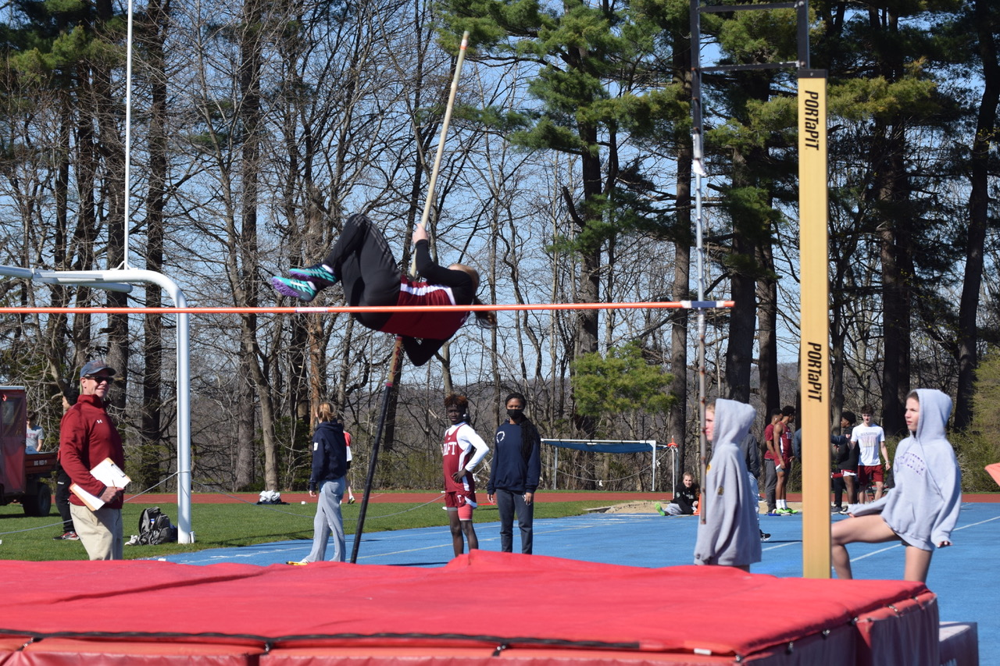

Track
My events: shotput, discus, and pole vault
I started discus in 8th grade and placed 2nd in middle school states. For highschool my current PR is 93' 5" and I'm shooting to finish the season over 110" and breaking the school record.

I started pole vault this year and my current PR is 6'6". I'm hoping to clear 7' by the end of the season.

I started throwing shotput in 8th grade and placed 4th overall at middle school states. My current PR is 28'3" I'm hoping to hit 30' by the end of the season.
Photo Credit to Taft Photos and Mr. Robert Falcetti